UNESPAR | CAMT | Faculdade de Artes do Paraná
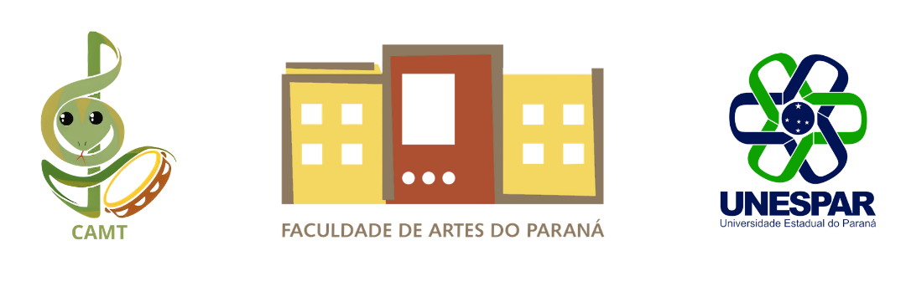
| Mídia | Horário | Atividade | Palestrante / Facilitador |
|---|---|---|---|
| 08:00 | Abertura da Semana de Musicoterapia | - | |
| 08:30 | Musicoterapia ontem e hoje Musicoterapeuta. Professora do Colegiado de Musicoterapia da UNESPAR, Campus de Curitiba II. Doutora em Educação. Professora do programa de Mestrado em Educação Inclusiva-PROFEI. Membro do Núcleo de Estudos e Pesquisas Interdisciplinares em Musicoterapia-NEPIM. Conversa sobre o cenário do curso de Musicoterapia da UNESPAR nas últimas décadas e da inserção de profissionais musicoterapeutas na sociedade laboral. |
Prof. Dra. Rosemyrian Ribeiro dos Santos Cunha | |
| 10:00 | Intervalo cultural | - | |
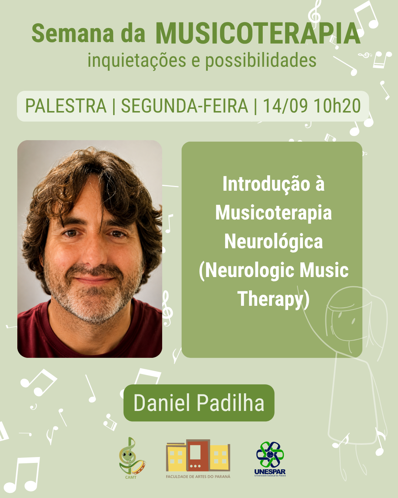 |
10:20 | Introdução à Musicoterapia Neurológica (Palestra Internacional - online) Daniel Padilha é Musicoterapeuta e Musicoterapeuta Neurológico, com mais de 10 anos de experiência clínica internacional nas áreas de neuroreabilitação, lesão cerebral e transtornos neurológicos, atuando com crianças e adultos. Possui Mestrado em Musicoterapia pela Universidade de Barcelona e formação avançada em Musicoterapia Neurológica pela Academy of Neurologic Music Therapy, de Toronto, Canadá. É registrado no Health and Care Professions Council (HCPC) e membro da British Association for Music Therapy (BAMT), no Reino Unido. Em Londres, atuou como Music Therapist Lead na Unidade de Neuroreabilitação Aguda do Wellington Hospital, desenvolvendo intervenções voltadas à reabilitação física, cognitiva, comunicativa, emocional e social de pessoas com lesão cerebral. Atualmente mantém prática clínica privada em Musicoterapia Neurológica, trabalhando em colaboração com fisioterapeutas, terapeutas ocupacionais, fonoaudiólogos e outros profissionais envolvidos na neuroreabilitação. A palestra apresenta os fundamentos da Musicoterapia Neurológica (Neurologic Music Therapy - NMT) e sua aplicação na neuroreabilitação. A partir da experiência clínica do palestrante, serão abordadas diferentes formas de utilizar a música e seus elementos - como ritmo, melodia e estrutura - de maneira terapêutica e direcionada a objetivos de reabilitação. Serão apresentados exemplos de intervenções relacionadas às áreas motora, cognitiva, comunicação e linguagem, mostrando também como a Musicoterapia Neurológica pode ser integrada ao trabalho de uma equipe multidisciplinar. A proposta é oferecer uma introdução prática e acessível à NMT, aproximando seus princípios da realidade clínica e demonstrando possibilidades de aplicação com pessoas com lesões cerebrais e outros transtornos neurológicos. |
Daniel Padilha |
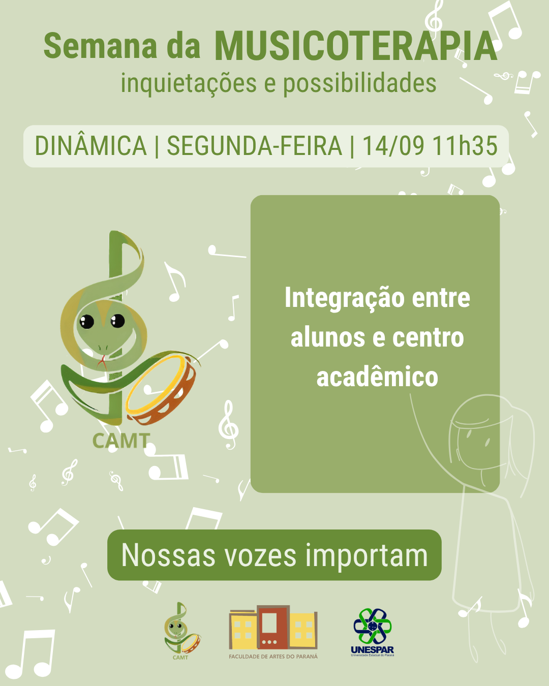 |
11:35 | Dinâmica de integração entre alunos e centro acadêmico | Centro Acadêmico de Musicoterapia |
| Mídia | Horário | Atividade | Palestrante / Facilitador |
|---|---|---|---|
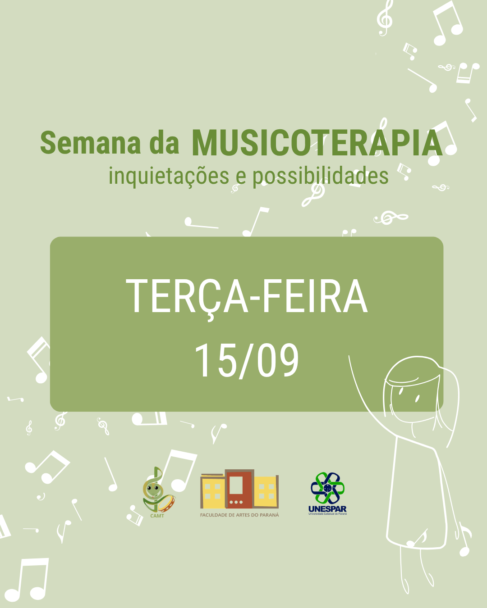 |
07:45 | Chegança | - |
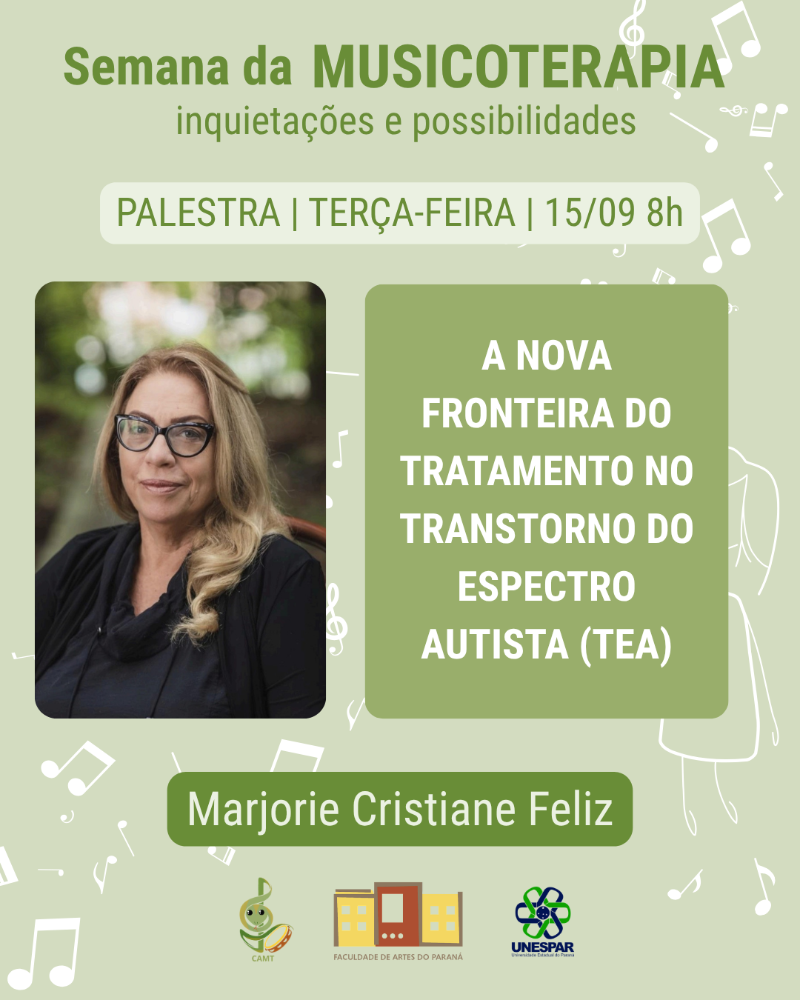 |
08:00 | A nova fronteira do tratamento do Transtorno no Espectro Autista (TEA) a partir do canabidiol
Médica Pediatra Neonatologista e doutoranda em Farmacologia pela Universidade Federal do Paraná (UFPR), sob orientação da Profa. Dra. Joice Maria da Cunha. Atuação em Neonatologia e no Acompanhamento Ambulatorial de crianças prematuras egressas de UTI Neonatal na UBS Mãe Curitibana. Possui formação complementar em Epidemiologia pela Johns Hopkins University e em Saúde Pública. Pesquisa o uso do canabidiol (CBD) no tratamento do Transtorno do Espectro Autista (TEA). Sua trajetória une a prática clínica no cuidado da primeira infância à pesquisa translacional, com interesse particular em abordagens terapêuticas integrativas e multidisciplinares no neurodesenvolvimento infantil. A palestra apresenta os avanços mais recentes na abordagem terapêutica do Transtorno do Espectro Autista, com destaque para o papel do sistema endocanabinoide e o potencial terapêutico do canabidiol (CBD) como estratégia inovadora de tratamento. Serão discutidos os fundamentos farmacogenômicos que influenciam a resposta individual ao CBD, os desafios regulatórios da pesquisa clínica com canabinoides no Brasil, e os resultados esperados de ensaios clínicos em andamento, oferecendo uma visão atualizada e baseada em evidências sobre as novas fronteiras no cuidado de crianças e adolescentes com TEA. É com esse olhar voltado à interdisciplinaridade no tratamento do TEA, trazendo aos futuros musicoterapeutas uma perspectiva médica sobre as novas fronteiras terapêuticas do autismo e os pontos de diálogo entre a pesquisa clínica e a musicoterapia enquanto intervenção no neurodesenvolvimento. |
Marjorie Feliz |
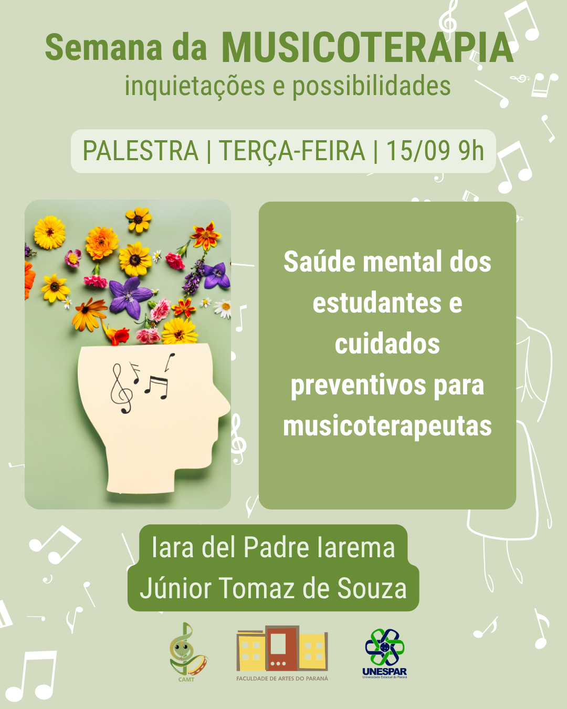 |
09:00 | Saúde mental dos estudantes e cuidados preventivos para musicoterapeutas | 1. Júnior Tomaz de Souza (DIVAS) 2. Prof. Msa. Iara del Padre Iarema |
| 10:00 | Intervalo cultural | - | |
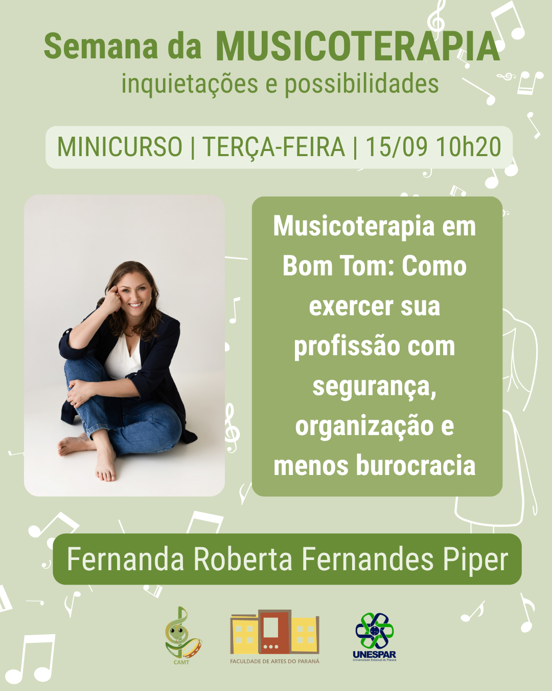 |
10:20 | Musicoterapia em bom tom: como exercer sua profissão com segurança, organização e menos burocracia
Fernanda Roberta Fernandes Piper é formada em Comunicação Social e Ciências Contábeis pelo UniBrasil, com mais de 21 anos de experiência na área contábil. É contadora e gestora da Contabilidade Fernandes, escritório com mais de 45 anos de atuação e mais de 160 clientes, em sua maioria profissionais e empresas da área da saúde. Sua atuação é voltada a tornar os temas contábeis, tributários e empresariais mais claros, práticos e acessíveis. O minicurso apresenta, de forma leve e prática, os principais cuidados legais, contábeis e financeiros relacionados à atuação do musicoterapeuta. Serão abordados temas como regulamentação profissional, prestação de serviços como pessoa física ou jurídica, emissão de documentos fiscais, impostos, contratos e organização financeira. O objetivo é ajudar o profissional a tomar decisões mais seguras e manter sua atividade organizada, sem permitir que a burocracia ocupe o espaço da criatividade e do cuidado. |
Fernanda Roberta Piper |
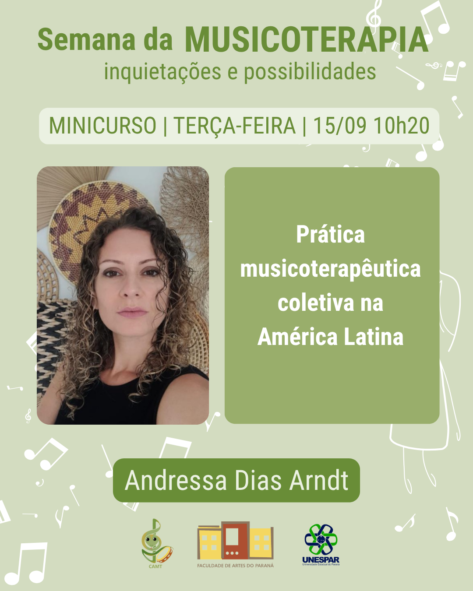 |
10:20 | MINICURSO: Prática musicoterapêutica coletiva na América Latina Possui graduação em Musicoterapia pela Universidade Estadual do Paraná - Faculdade de Artes do Paraná. Doutora em Psicologia pela Universidade Federal de Santa Catarina - UFSC. Mestre em Psicologia pelo Programa de Pós-Graduação em Psicologia da Universidade Federal de Santa Catarina - UFSC. Especialista em Formação Pedagógica do Professor Universitário pela Pontifícia Universidade Católica PUC-PR. Trabalha como professora adjunta na Universidade Estadual do Paraná Campus de Curitiba II no Bacharelado em Musicoterapia. É docente no Programa de Pós-Graduação em Música (PPGMUS) da UNESPAR. Membro do NEPIM (Núcleo de Pesquisas Interdisciplinares em Musicoterapia). Atuando principalmente nas seguintes áreas: musicoterapia, música, cultura, sociedade, canto e docência. |
Prof. Dra. Andressa Arndt |
| Mídia | Horário | Atividade | Palestrante / Facilitador |
|---|---|---|---|
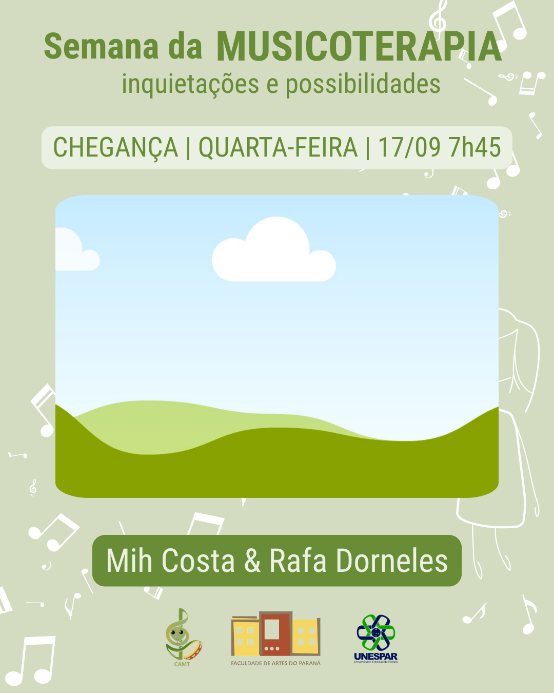 |
07:45 | Chegança | Mih Costa e Rafa Dorneles vão agitar os nossos corações na manhã de quarta-feira. |
| 08:00 | Aspectos éticos-políticos da musicoterapia e diversidade Juliana Brito, nascida em Juiz de Fora/MG, é musicista, cantora, psicóloga, musicoterapeuta, mestra em Música e doutoranda em Musicoterapia. Atua como musicoterapeuta no Instituto Mano Down e regente do Bloco ClandesTinas. É membra fundadora do Coletivo Musicoteraprets e foi musicoterapeuta convidada do projeto Diversxs – Musicovivências Queers. Com 30 anos de trajetória no universo da música e da percussão, constrói uma atuação que articula arte, cuidado e pesquisa. Na Musicoterapia, desenvolve pesquisas voltadas à utilização consciente do ritmo e dos instrumentos de percussão como recursos terapêuticos focados na escuta, vínculo e transformação no setting musicoterapêutico. |
Juliana Brito (@musicoteraprets) | |
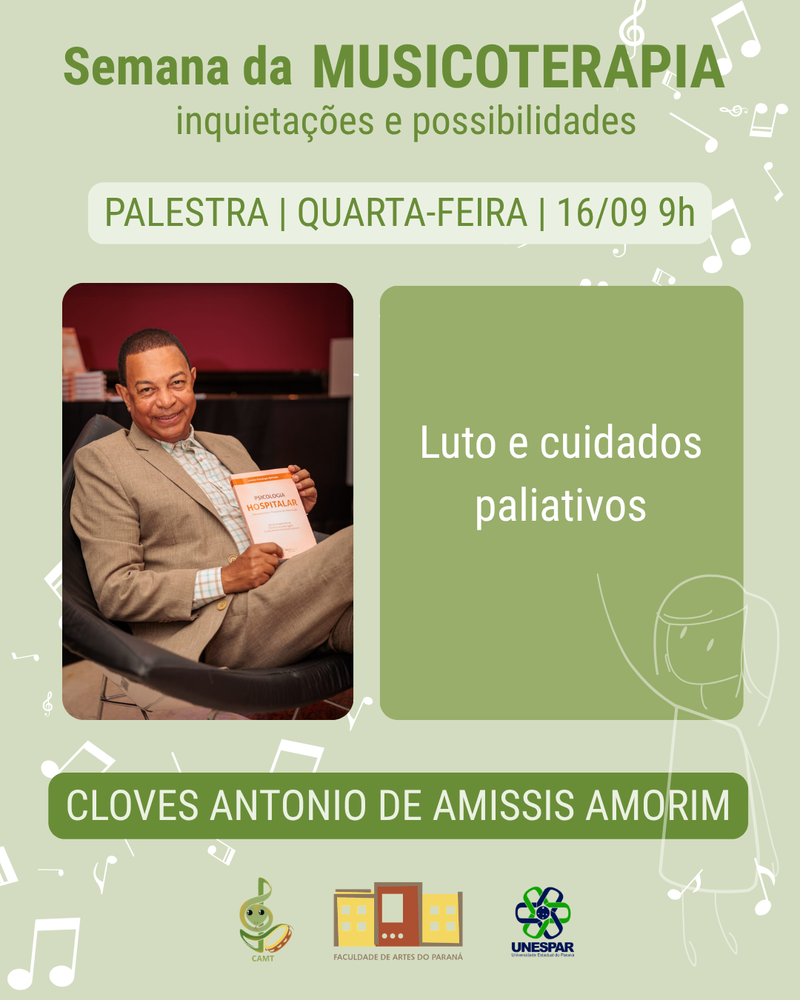 |
09:00 | Luto e cuidados paliativos
Formado em Psicologia pela Universidade Federal do Paraná, Especialista em Cuidados Paliativos pela Facultad de Medicina da Universidad Complutense de Madrid, Especialista em Bioética pela PUCPR, Mestre e Doutor em Educação pela PUCPR. Curso de Atualização em Cuidados Paliativos em Sevilha – Espanha ( 2018).Professor Titular do Curso de Psicologia da PUCPR, onde atua desde 1991. Ex Psicólogo do Serviço de Hemato-Oncologia do Hospital Pequeno Príncipe, Ex Psicólogo do Serviço de Transplante de Medula Óssea do Hospital de Clínicas da UFPR. Autor de artigos e capítulos de livros sobre Tanatologia, Luto, Síndrome de Burnout e Violências Escolares (Bullying). Criador e Diretor do Instituto de Tanatologia Cloves Amorim (ITACA). Psicoterapeuta de Adultos e Idosos. |
Cloves Antonio De Amissis Amorim |
| 10:00 | Intervalo cultural | - | |
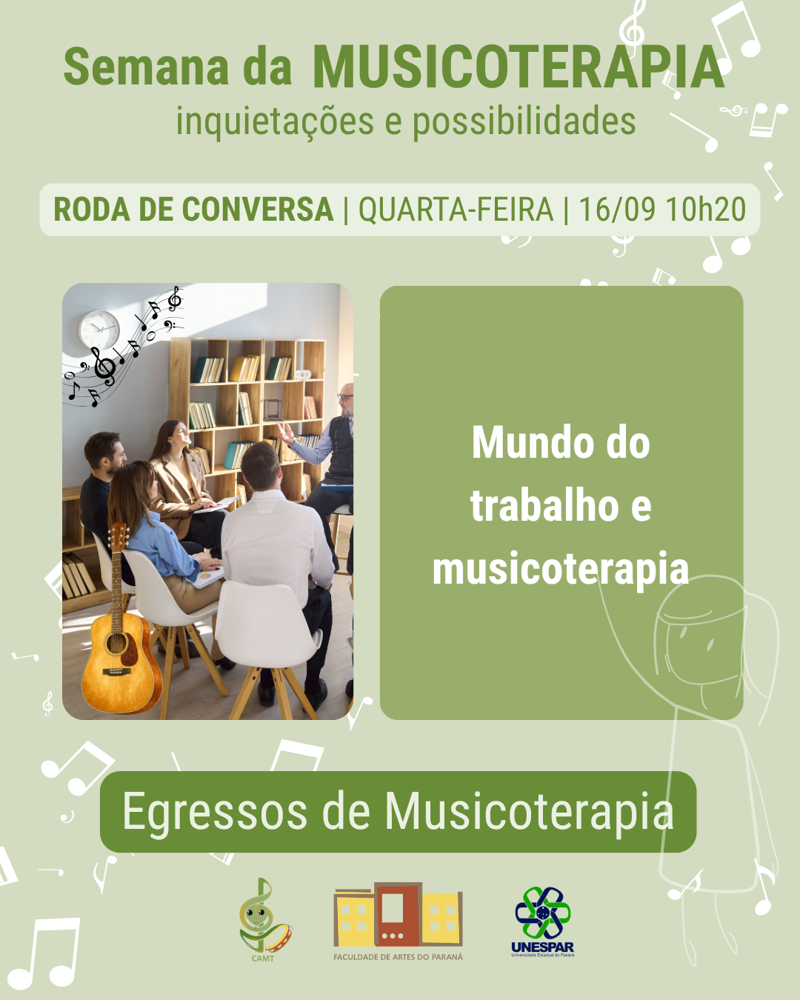 |
10:20 | Roda de conversa com egressos da FAP: mundo do trabalho e musicoterapia | Egressos da FAP |
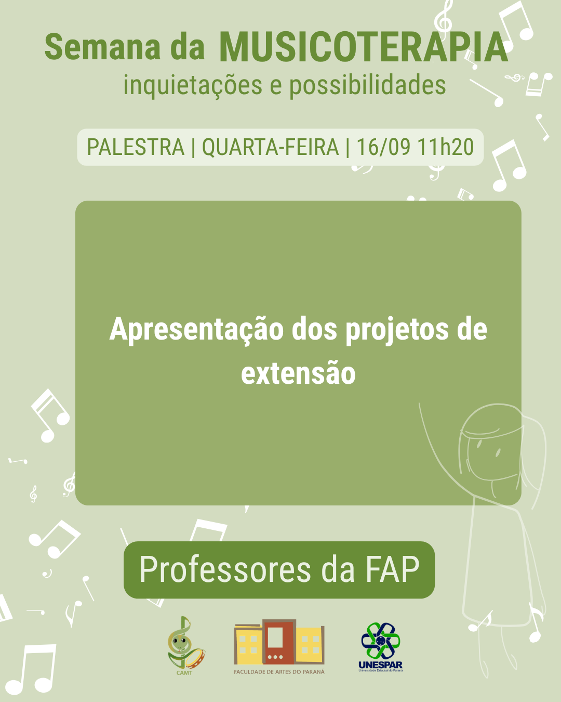 |
11:20 | Apresentação de projetos de extensão: 1. Roda de Samba 2. Projeto Fermata 3. UAPI 4. Grupo Integrativo de Música Brasileira para Autistas |
1. Profa Dra Mariana Lacerda Arruda 2. Profa Dra Pierangela Simões 3. Prof. Dr. Lydio Roberto 4. Prof Ms. José Augusto Pereira Navarro Lins |
| Mídia | Horário | Atividade | Palestrante / Facilitador |
|---|---|---|---|
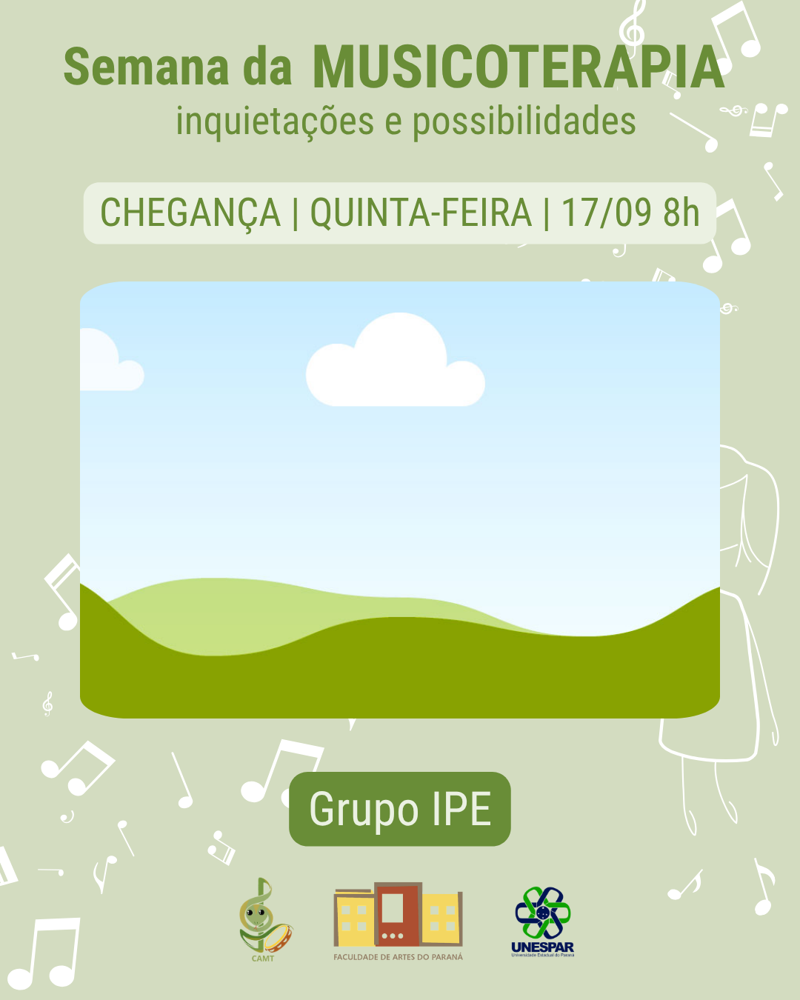 |
08:00 | Chegança | Grupo IPE oferara essa chegança premium na quinta-feira. |
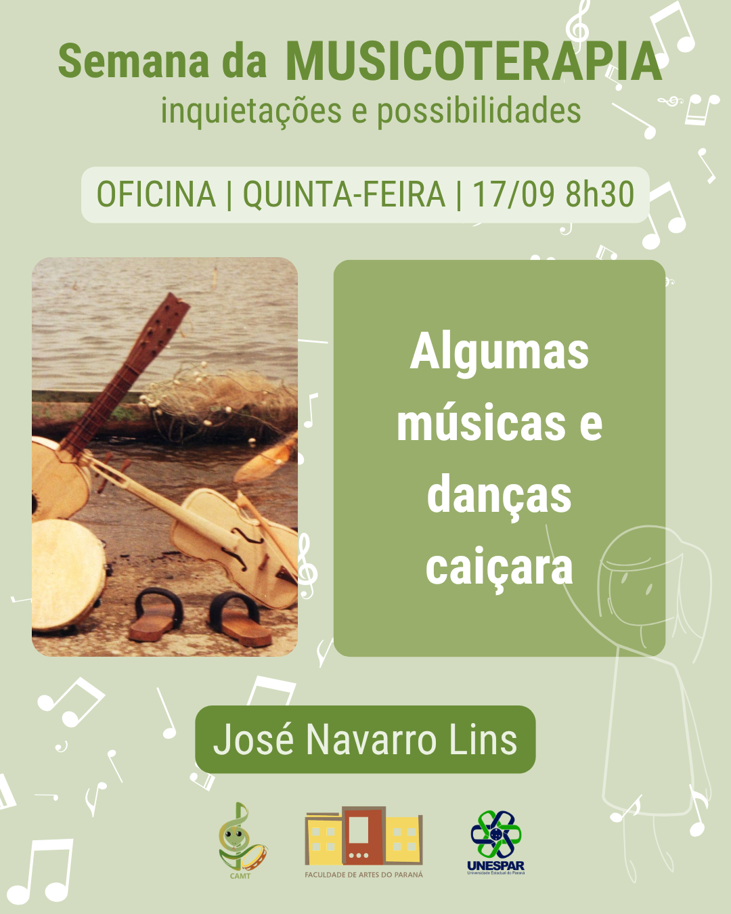 |
08:30 - 11:30 | OFICINA: Músicas e danças caiçara Oficina com o objetivo de aproximar os estudantes da música caiçara, suas canções e seus instrumentos musicais tradicionais, bem como de algumas danças realizadas por comunidades em todo o território caiçara. Conteúdo: - Breve contextualização etnomusicológica; Música e Dança: - Contato com os instrumentos musicais; - Modas bailadas (Chamarrita e Dom Dom) - Ciranda Caiçara - Passadinho; - Arara; - Pau de Fitas |
Prof Ms. José Augusto Pereira Navarro Lins |
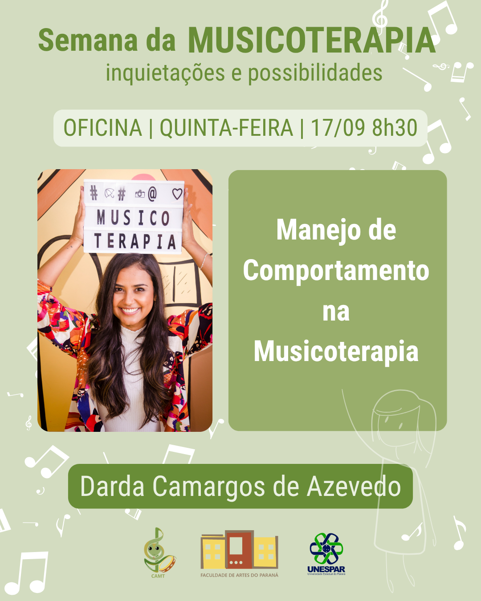 |
08:30 - 11:30 | OFICINA: Manejo de comportamento na musicoterapia Mestre em Música pela Universidade Estadual do Paraná (2025), possui graduação em Música pela Faculdade de Ciências Aplicadas de Cascavel (2011), especialização em Neuropedagogia na Educação pelo Instituto Rhema Educação (2011) e especialização em Musicoterapia pela Faculdade Candeias (2017). Atua na área da música desde 2010, com experiência em ensino-aprendizagem, educação regular e inclusiva, e, desde 2013, no atendimento especializado de crianças com Autismo com abordagens coportamentais e desenvolvimentistas. Atualmente, dedica-se à Musicoterapia aplicada aos transtornos do desenvolvimento, atendendo o público infantojuvenil em contextos individuais e grupais. Também realiza workshops, mentorias e formação de profissionais, voltados à utilização da música como estratégia de intervenção nos transtornos do neurodesenvolvimento, além de produzir conteúdos educativos para profissionais da área. A oficina Manejo de Comportamento na Musicoterapia apresenta estratégias simples e práticas para que profissionais iniciantes possam compreender melhor os comportamentos desafiadores que podem surgir durante os atendimentos. O conteúdo aborda a identificação das possíveis funções dos comportamentos, a observação de antecedentes e consequências, o uso de reforço positivo, recursos visuais e sensoriais, organização da rotina e estratégias de comunicação e autorregulação. Também são apresentadas orientações para diferenciar crises e birras e para atuar de forma preventiva e segura durante as sessões. |
Darda Azevedo |
| 08:30 - 11:30 | OFICINA: Percussão em Musicoterapia Juliana Brito, nascida em Juiz de Fora/MG, é musicista, cantora, psicóloga, musicoterapeuta, mestra em Música e doutoranda em Musicoterapia. Atua como musicoterapeuta no Instituto Mano Down e regente do Bloco ClandesTinas. É membra fundadora do Coletivo Musicoteraprets e foi musicoterapeuta convidada do projeto Diversxs – Musicovivências Queers. Com 30 anos de trajetória no universo da música e da percussão, constrói uma atuação que articula arte, cuidado e pesquisa. Na Musicoterapia, desenvolve pesquisas voltadas à utilização consciente do ritmo e dos instrumentos de percussão como recursos terapêuticos focados na escuta, vínculo e transformação no setting musicoterapêutico. A oficina “Percussão na Musicoterapia” é baseada na Musicoterapia improvisacional e tem como objetivo proporcionar experiências práticas com instrumentos de percussão, explorando o ritmo, a escuta, a interação e a improvisação musical como recursos para a prática musicoterapêutica. A proposta busca ampliar as possibilidades de utilização da percussão em contextos clínicos e terapêuticos, valorizando a criatividade, a expressão musical e a construção coletiva. |
Juliana Brito |
| Mídia | Horário | Atividade | Palestrante / Facilitador |
|---|---|---|---|
| 08:00 | Sarau de musicoterapia | - | |
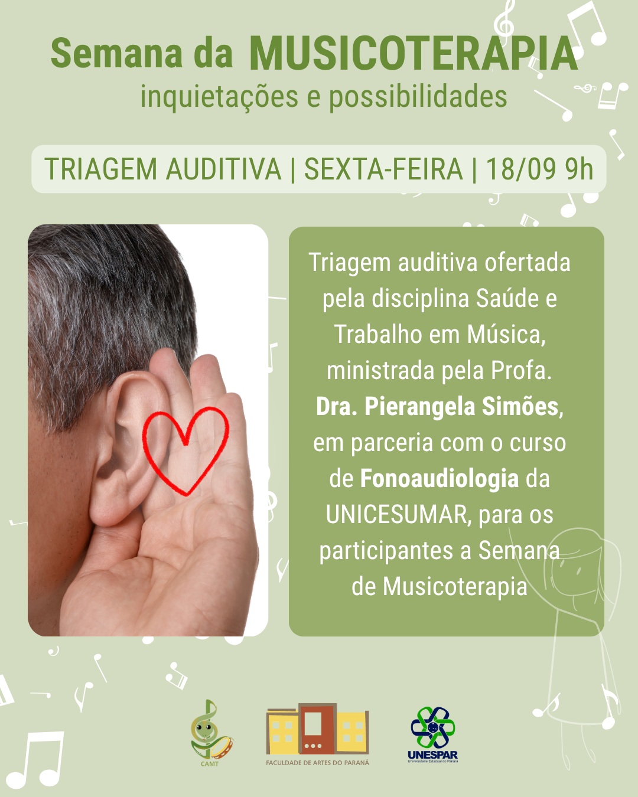 |
09:00 | Triagem auditiva ofertada pela disciplina Saúde e Trabalho em Música | Profa. Dra. Pierangela Simões, em parceria com o curso de Fonoaudiologia da UNICESUMAR |